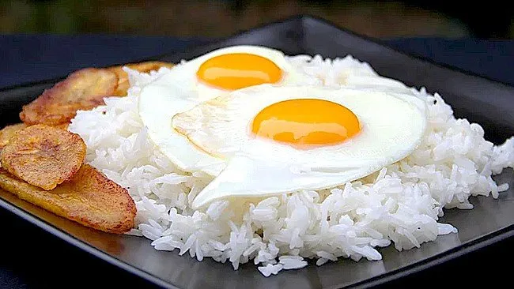

Escribir
"El arte que me calma"
La historia de la escritura es una de las más importantes en el desarrollo
de las civilizaciones humanas, ya que marcó el inicio de la comunicación registrada y
la preservación del conocimiento. Surgió hace más de 5,000 años con sistemas como los
pictogramas, que representaban ideas a través de dibujos simples, evolucionando en culturas como la sumeria, donde se desarrolló la escritura cuneiforme.
Mi historia con escribir
inicialmente, fue una palabra:poesía y vino de la nada, estaba sentada frente a la computadora y agobiada
cuando las palabras empezaron a fluir de repente y desde entonces no he parado de escribir cuando estoy sola,
desconcentrada y cansada solo escribo, escribo hasta sin quererlo es un arte que no puedo soltar (o que no me quiere soltar a mi)
es el arte que me entiende y que me calma
Uno de mis versos:
"No lo entiendes te necesito, te necesito de la misma forma en la que el odio necesita al amor.
De la misma forma en la que la alegría necesita a la tristeza...Saber que respiras entre mis entrañas, aunque no me mires aunque no me sientas. Tú no existencia es motivo de mi tranquilidad."
Música: otro de mis hobbies preferidos es escuchar música y disfruto de artistas como Lana Del Rey, Melanie Martinez o Billie Eilish.

Leer
Foto y frase de uno de mis escritores favoritos:
Me encanta leer viajar a un mundo diferente y conocer otros personajes, otra esencia, otra vida. Ver el universo
a través de la creatividad de otra persona...
Algunos de mis libros favoritos
Algunos libros que no faltan cada mes en mis librero:
1. El caballero de la armadura oxidada - Robert Fisher
2. Cartero - Charles Bukowski
3. Ghostgirl - Tonya Hurley
4. Dora y otros cuentos - Delia Weber
MI PLATILLO FAVORITO:
